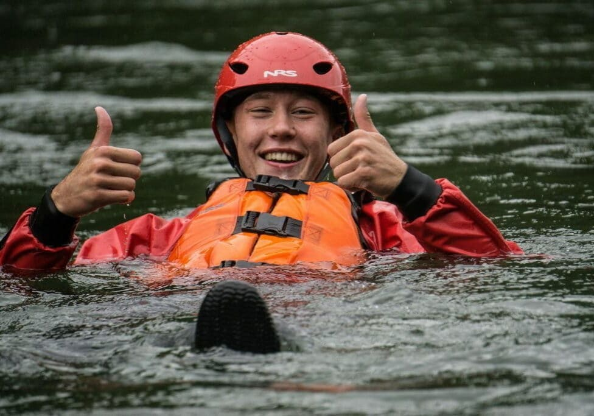

Rafting Company

Welcome to our rafting company! We are dedicated to providing thrilling and unforgettable white-water
rafting experiences for adventurers of all skill levels. Whether you're a seasoned rafter or a
first-timer,
our expert guides will ensure your safety while you enjoy the excitement of navigating through some
of the
most beautiful rivers in the region. Join us for an adventure of a lifetime!
Hystory
Our rafting company was founded in 2005 by a group of adventure enthusiasts who shared a passion for
white-water rafting and a deep respect for nature. Over the years, we have grown into a leading
provider of rafting experiences, known for our commitment to safety, environmental stewardship, and
exceptional customer service. Our team of experienced guides is dedicated to providing unforgettable
adventures on some of the most beautiful rivers in the region.